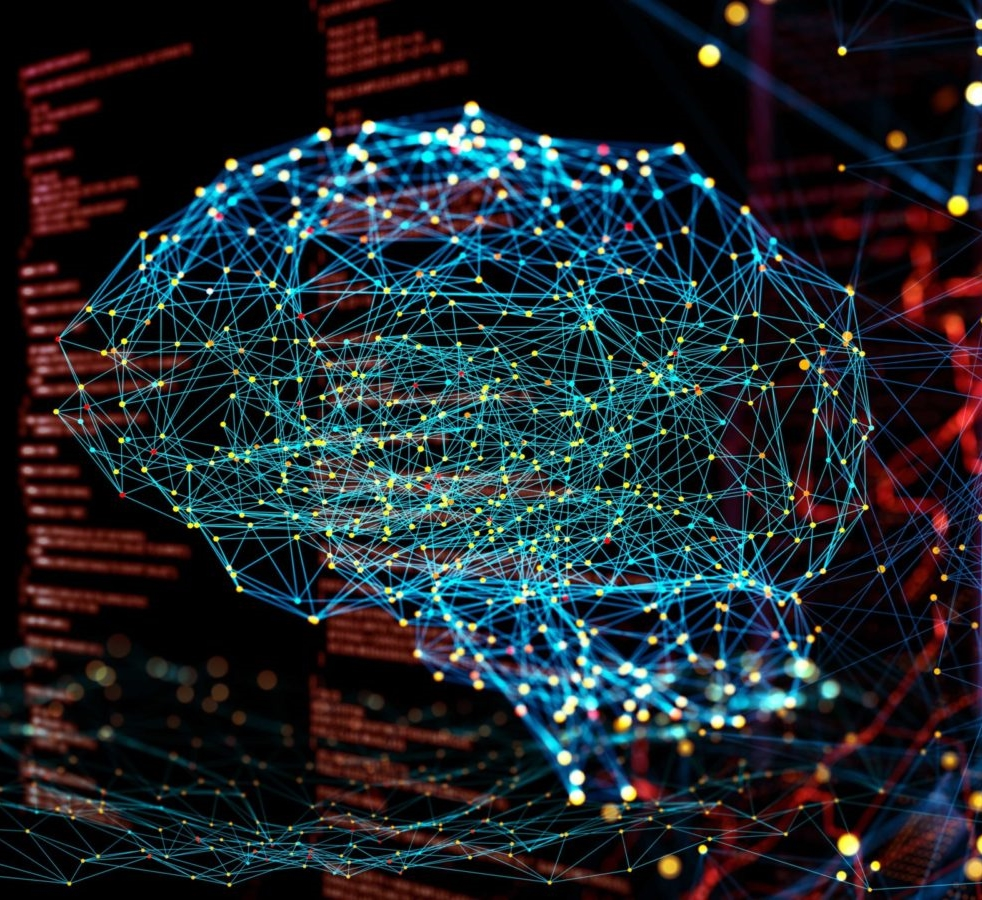

Machine learning, The human brain
Machine learning or as the title says "the future of humanity", what is machine learning? how does it work? how can this be the future of us? These are the questions that we are asking each other. On this website, we will try to cover and explain machine learning and its pros and cons. Stick with us to add one or two things to your knowledge.

How can we use this???!@$
Imagine the first human on earth, he/she didn't know what is right and what is wrong, the human brain is using machine learning to learn new things or to use the knowledge it has to do simple things. With machine learning we can train a computer to explore mars as humans, we can make them see the dangerous things, we can make a replica of the human brain and make cyborgs. You may say let's be realistic, ok ok I see!! machine learning is just like teaching a kid how to walk, you need patience, for example, you want to make a bot that cleans your computer folders from spam or junk, you cannot tell it what to delete if you do that what is the difference if you just did it by hand?? You just have to specify a few agreements or just give the computer some examples of junk files and it will learn how they look and it will delete them every day for you. That is the power of machine learning. It is the future of humanity.